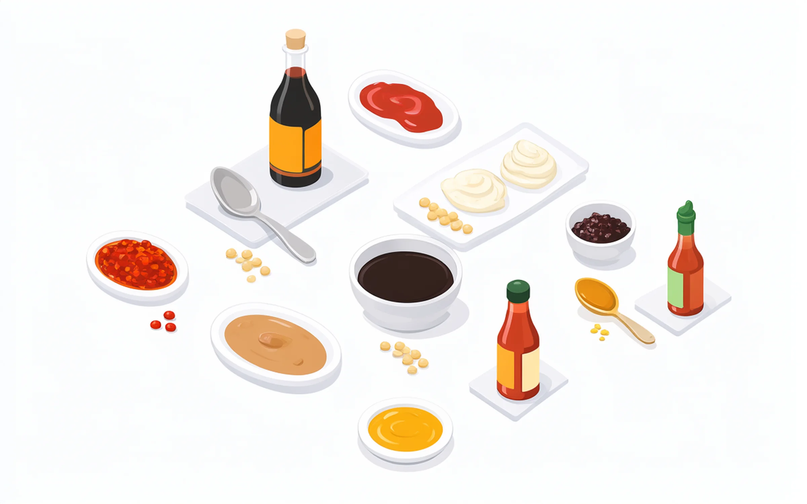
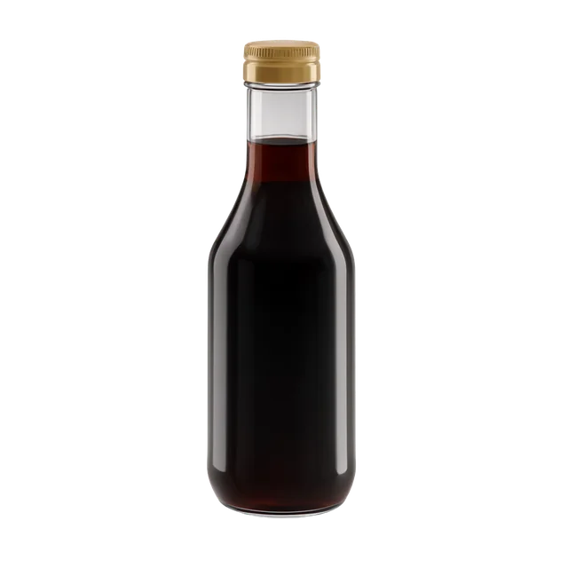
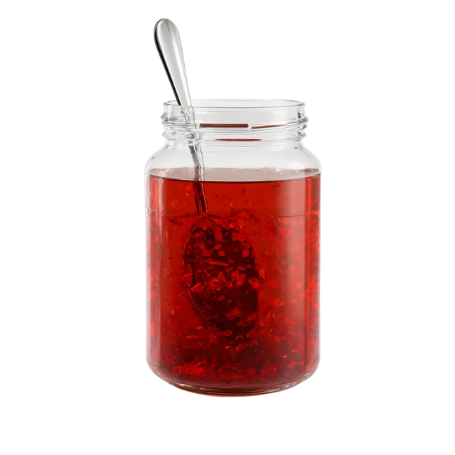
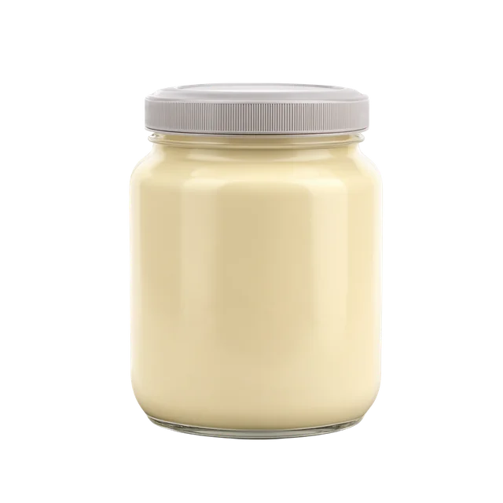
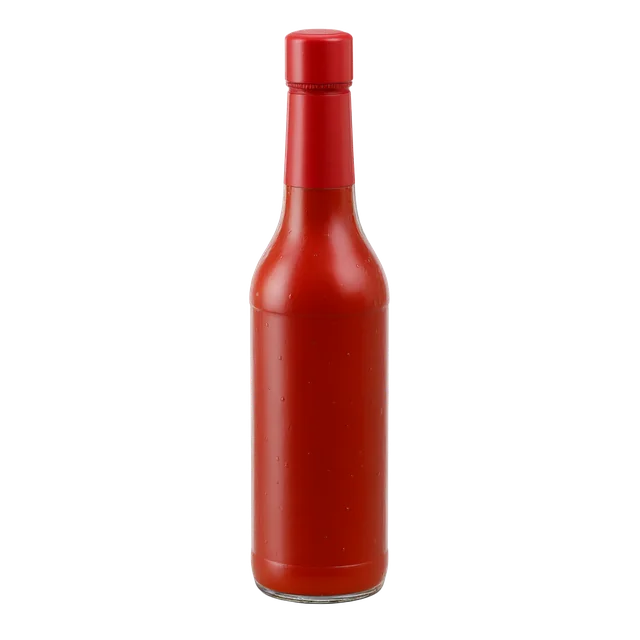

厨房
家居
服装
食物
身体部位
美妆与护肤
出行
Dips
蘸料
场景
卡片
女声
男声

指到或点一下物品
再听一次
soy sauce
chili oil
chili bean paste
oyster sauce
sesame paste
hoisin sauce
ketchup
mustard
mayonnaise
hot sauce

soy sauce
酱油

chili oil
辣椒油
chili bean paste
豆瓣酱
oyster sauce
蚝油
sesame paste
芝麻酱
hoisin sauce
海鲜酱
ketchup
番茄酱
mustard
黄芥末

mayonnaise
蛋黄酱

hot sauce
辣酱
‹ Deli 熟食
食物